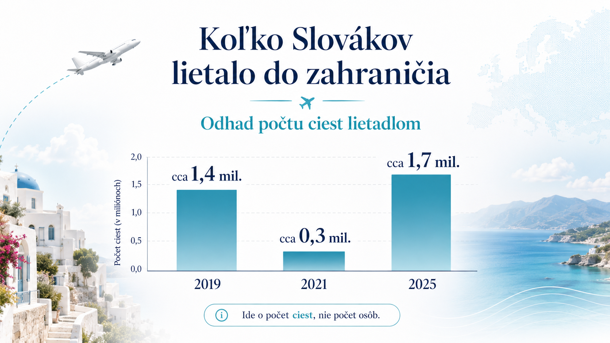
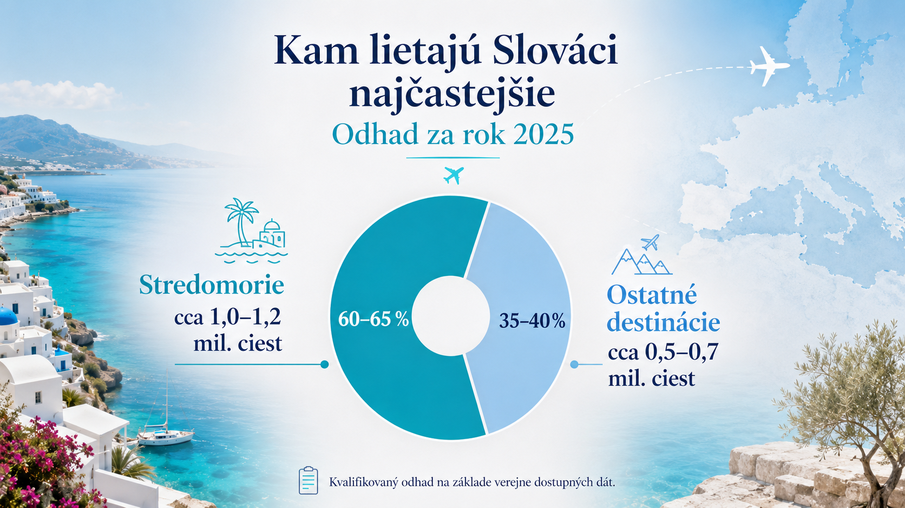
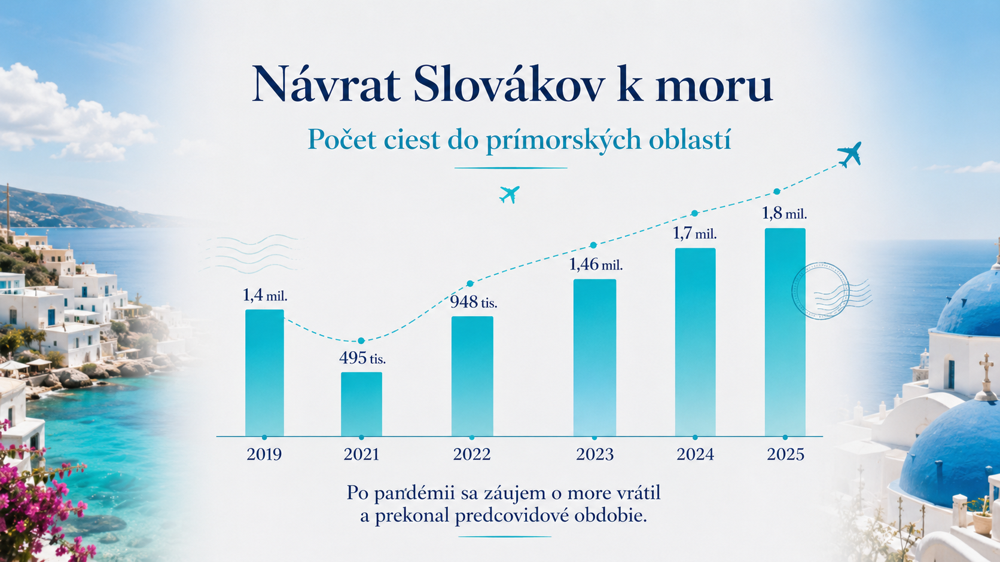
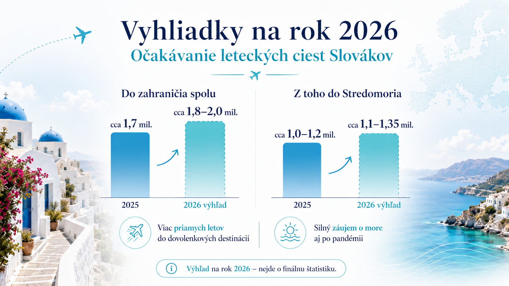

Pred pandémiou bolo lietanie pre Slovákov bežnou súčasťou dovoleniek. Potom prišiel covid, obmedzenia, neistota, rušené lety a návrat k autám. Dnes sa však situácia otočila. Slováci opäť cestujú do zahraničia vo veľkom a pri cestách za morom je záujem dokonca silnejšà než pred pandémiou.
Tento ÄŤlánok sa nepozerá na poÄŤet cestujĂşcich na slovenskĂ˝ch letiskách. To by nebolo Ăşplne presnĂ©, pretoĹľe zo Slovenska lietajĂş aj cudzinci a ÄŤasĹĄ Slovákov odlieta z Viedne, Budapešti, Krakova alebo inĂ˝ch letĂsk. Pozeráme sa preto na cestovanie obyvateÄľov Slovenska, teda na cesty Slovákov a rezidentov SR s prenocovanĂm.
DĂ´leĹľitá poznámka: nejde o poÄŤet unikátnych ÄľudĂ. Ide o poÄŤet ciest. Jeden ÄŤlovek mohol v jednom roku letieĹĄ viackrát.
Pred pandémiou: lietadlo bolo silnou voľbou pri cestách do zahraničia
Rok 2019 môžeme brať ako posledný plný predpandemický rok. Štatistický úrad SR uvádza, že v roku 2019 využili Slováci lietadlo pri približne 31 % zahraničných pobytov. V roku 2025 bolo zahraničných ciest lietadlom 1,7 milióna, čo bolo asi o štvrtinu viac než v úspešnom predcovidovom roku. Z toho sa dá odvodiť, že pred pandémiou išlo približne o 1,35 až 1,4 milióna zahraničných ciest lietadlom ročne.
Pred covidom boli silnĂ© aj cesty k moru. V roku 2019 absolvovali Slováci viac ako 1,4 miliĂłna ciest do prĂmorskĂ˝ch oblastĂ. Neznamená to automaticky, Ĺľe všetky boli lietadlom, pretoĹľe veÄľká ÄŤasĹĄ Slovákov cestovala naprĂklad do Chorvátska autom. Ukazuje to však, Ĺľe more a Stredomorie uĹľ pred pandĂ©miou patrili medzi hlavnĂ© dovolenkovĂ© smery.
Pandémia: lietanie padlo najviac
Počas pandémie sa najviac zmenil práve spôsob dopravy. V roku 2020 leteli Slováci lietadlom už len pri 13 % zahraničných pobytov. V roku 2021 sa situácia mierne zlepšila, ale lietadlo tvorilo stále len približne 20 % zahraničných ciest. Pre porovnanie, v roku 2019 to bolo 31 %.
V praxi to znamenalo prudký prepad leteckých dovoleniek. Mnohà ľudia cestovali menej, vyberali si bližšie destinácie alebo išli autom. Počas pandémie výrazne rástol podiel áut pri cestách do zahraničia, zatiaľ čo letecká doprava bola utlmená.
Najlepšie to vidno na cestách k moru. V roku 2021 absolvovali Slováci len 495-tisĂc ciest do prĂmorskĂ˝ch oblastĂ, zatiaÄľ ÄŤo rok pred pandĂ©miou to bolo viac ako 1,4 miliĂłna.
Rok 2022: návrat, ale ešte nie úplný
Rok 2022 bol prvĂ˝ vĂ˝raznejšà návrat cestovania. Slováci absolvovali 9,8 miliĂłna sĂşkromnĂ˝ch domácich a zahraniÄŤnĂ˝ch ciest s prenocovanĂm, ÄŤo bolo o 65 % viac neĹľ v roku 2021, ale stále pribliĹľne o pätinu menej neĹľ v roku 2019.
Pri cestách do zahraniÄŤia sa letecká doprava dostala takmer na 30 %. To znamená, Ĺľe sa uĹľ blĂĹľila k predpandemickĂ©mu pomeru z roku 2019, keÄŹ lietadlo tvorilo 31 % zahraniÄŤnĂ˝ch pobytov.
Aj more sa zaÄŤalo vracaĹĄ. V roku 2022 absolvovali Slováci 948-tisĂc dovoleniek v prĂmorskĂ˝ch oblastiach. Stále to bolo menej neĹľ pred pandĂ©miou, ale oproti roku 2021 išlo o vĂ˝raznĂ˝ nárast.
Roky 2023 až 2025: lietanie sa vrátilo a zahraničie prekonalo maximum
V roku 2023 uĹľ Slováci zrealizovali 3,9 miliĂłna ciest do zahraniÄŤia. Letecká preprava medziroÄŤne narástla o 36 % a cesty k moru dosiahli 1,46 miliĂłna. To znamená, Ĺľe prĂmorskĂ© oblasti sa uĹľ dostali pribliĹľne na ĂşroveĹ pred pandĂ©miou, prĂpadne mierne nad Ĺu.
V roku 2024 pokraÄŤoval rast zahraniÄŤnĂ˝ch ciest. Slováci zrealizovali 4,4 miliĂłna ciest do zahraniÄŤia a pribliĹľne tretina cestujĂşcich vyuĹľila leteckĂş dopravu. Tento spĂ´sob presunu bol o 13 % vyššà neĹľ v Ăşspešnom predcovidovom roku. Medzi najobľúbenejšĂmi zahraniÄŤnĂ˝mi krajinami boli ÄŚesko, Chorvátsko, MaÄŹarsko, Taliansko, PoÄľsko, Turecko a GrĂ©cko.
Rok 2025 priniesol novĂ˝ silnĂ˝ mĂÄľnik. Obyvatelia Slovenska zrealizovali 4,6 miliĂłna sĂşkromnĂ˝ch ciest do zahraniÄŤia, ÄŤĂm prekonali doterajšie maximum z roku 2019 o 5,1 %. Viac ako tretina zahraniÄŤnĂ˝ch ciest bola lietadlom, konkrĂ©tne pribliĹľne 1,7 miliĂłna ciest.
Prehľad: koľko Slovákov lietalo do zahraničia
NasledujĂşce ÄŤĂsla treba ÄŤĂtaĹĄ ako poÄŤet ciest, nie poÄŤet osĂ´b. Pri niektorĂ˝ch rokoch ide o orientaÄŤnĂ˝ dopoÄŤet podÄľa verejne dostupnĂ˝ch Ăşdajov Ĺ tatistickĂ©ho Ăşradu SR.

| Rok | Zahraničné cesty Slovákov lietadlom | Poznámka |
|---|---|---|
| 2019 | cca 1,35 – 1,4 mil. | predpandemický štandard |
| 2020 | cca 100 – 120 tis. | prudký covidový prepad |
| 2021 | cca 280 – 300 tis. | mierne oživenie, stále hlboko pod normálom |
| 2022 | cca 900 tis. | návrat k lietaniu |
| 2023 | cca 1,2 mil. | ďalšà rast |
| 2024 | cca 1,5 mil. | nad ĂşrovĹou roka 2019 |
| 2025 | cca 1,7 mil. | silnĂ˝ povojpandemickĂ˝ rok |
Najdôležitejšia zmena je jasná: v roku 2025 Slováci lietali do zahraničia viac než pred pandémiou.
Stredomorie verzus ostatné destinácie
Presné rozdelenie „koľko Slovákov letelo lietadlom do Stredomoria a koľko mimo Stredomoria“ nie je vo verejne dostupnej správe uvedené ako samostatná tabuľka. Štatistiky uvádzajú spôsob dopravy a destinácie, ale nie vždy ich spájajú do jednej presnej kombinácie.
Preto je rozdelenie nižšie kvalifikovanĂ˝ odhad Letom po StredomorĂ, nie oficiálna štatistika.
Za Stredomorie tu povaĹľujeme najmä Chorvátsko, Taliansko, GrĂ©cko, Turecko, Cyprus, Maltu, Ĺ panielsko pri Stredozemnom mori a ostrovnĂ© alebo prĂmorskĂ© dovolenkovĂ© destinácie v tejto oblasti. Pri Slovensku je dĂ´leĹľitĂ© myslieĹĄ aj na to, Ĺľe ÄŤasĹĄ Stredomoria, najmä Chorvátsko a severnĂ© Taliansko, Slováci ÄŤasto absolvujĂş autom.

| Rok | Odhad leteckých ciest do Stredomoria | Odhad leteckých ciest mimo Stredomoria |
|---|---|---|
| 2019 | cca 0,8 – 1,0 mil. | cca 0,4 – 0,6 mil. |
| 2021 | cca 0,15 – 0,2 mil. | cca 0,1 – 0,15 mil. |
| 2025 | cca 1,0 – 1,2 mil. | cca 0,5 – 0,7 mil. |
Zjednodušene: dnes môže do Stredomoria smerovať približne 60 až 65 % zahraničných leteckých ciest Slovákov. Zvyšok tvoria najmä mestské výlety, návštevy rodiny, pracovné alebo osobné cesty, severnejšia Európa a vzdialenejšie dovolenkové destinácie.
Tento odhad dáva zmysel aj podÄľa rebrĂÄŤkov obľúbenĂ˝ch krajĂn. Medzi ÄŤasto navštevovanĂ˝mi destináciami sa pravidelne objavujĂş Chorvátsko, Taliansko, Turecko a GrĂ©cko. V roku 2025 bolo Chorvátsko druhou najnavštevovanejšou krajinou po ÄŚesku a Slováci tam zrealizovali vyše pol miliĂłna ciest.
Návrat Slovákov k moru
Cesty do prĂmorskĂ˝ch oblastĂ ukazujĂş, ako rĂ˝chlo sa dovolenkovĂ© správanie po pandĂ©mii zmenilo. Po prudkom prepade v roku 2021 sa záujem o more postupne vrátil a v ÄŹalšĂch rokoch uĹľ prekonal predcovidovĂ© obdobie.

Vyhliadka na rok 2026: silnĂ˝ rok pre lietanie k moru
Rok 2026 ešte nemôžeme hodnotiť ako hotový fakt. Finálne štatistiky budú dostupné až po skončenà roka. Dá sa však urobiť opatrná vyhliadka.
Základný predpoklad je, že počet zahraničných ciest lietadlom môže ďalej mierne rásť. Po silnom roku 2025 by sa mohol dostať približne na úroveŠ1,8 až 2,0 milióna ciest.

| Rok | Letecké cesty Slovákov do zahraničia | Z toho odhad do Stredomoria | Ostatné destinácie |
|---|---|---|---|
| 2025 | cca 1,7 mil. | cca 1,0 – 1,2 mil. | cca 0,5 – 0,7 mil. |
| 2026 výhľad | cca 1,8 – 2,0 mil. | cca 1,1 – 1,35 mil. | cca 0,55 – 0,75 mil. |
Tento výhľad podporuje najmä rast ponuky letov. Ryanair oznámil, že v lete 2026 bude z Bratislavy prevádzkovať rekordných 33 destinácià a otvorà 10 nových liniek vrátane Alicante, Atén, Barcelony, Lamezie Terme, Malagy, Neapola, Palerma a Pisy.
Letisko Bratislava zároveĹ uvádza v letnom letovom poriadku 2026 viacero priamych spojenĂ do stredomorskĂ˝ch destináciĂ, naprĂklad Alghero, Alicante, Antalya, AtĂ©ny, Barcelona, Bari, Korfu, Malaga, Malta, Mykonos a Neapol.
DĂ´leĹľitá poznámka: letovĂ˝ poriadok z Bratislavy nie je to istĂ© ako poÄŤet Slovákov, ktorĂ lietajĂş. Nie všetci cestujĂşci z Bratislavy sĂş Slováci a veÄľa Slovákov lieta aj z Viedne, Budapešti, Krakova alebo KošĂc. Napriek tomu je rast priamej ponuky dobrĂ˝m signálom, Ĺľe dopyt po lietanĂ bude v roku 2026 silnĂ˝.
Čo z toho vyplýva
PandĂ©mia na chvĂÄľu vĂ˝razne zabrzdila lietanie Slovákov. V roku 2020 a 2021 Äľudia menej cestovali, ÄŤastejšie volili auto a pri zahraniÄŤnĂ˝ch cestách boli opatrnejšĂ.
Po roku 2022 sa však trend otočil. Slováci sa k lietaniu vrátili a v roku 2025 už počet zahraničných ciest lietadlom prekonal predpandemické obdobie. Najsilnejšie z toho ťažia dovolenkové destinácie pri mori.
Pre Letom po StredomorĂ je najzaujĂmavejšà práve tento záver: Stredomorie zostáva pre Slovákov jednou z najdĂ´leĹľitejšĂch dovolenkovĂ˝ch oblastĂ. A ak sa naplnĂ vĂ˝hÄľad na rok 2026, leteckĂ˝ch ciest Slovákov do Stredomoria mĂ´Ĺľe byĹĄ ešte viac neĹľ v roku 2025.
Poznámka k dátam
Oficiálne Ăşdaje v ÄŤlánku vychádzajĂş zo zverejnenĂ Ĺ tatistickĂ©ho Ăşradu SR a správ TASR, ktorĂ© tieto Ăşdaje citujĂş. ÄŚĂsla pri StredomorĂ a rok 2026 sĂş oznaÄŤenĂ© ako odhad alebo vĂ˝hÄľad, pretoĹľe verejnĂ© dáta priamo neuvádzajĂş kompletnĂ© rozdelenie „lietadlo Ă— Stredomorie Ă— ostatnĂ© destinácie“.